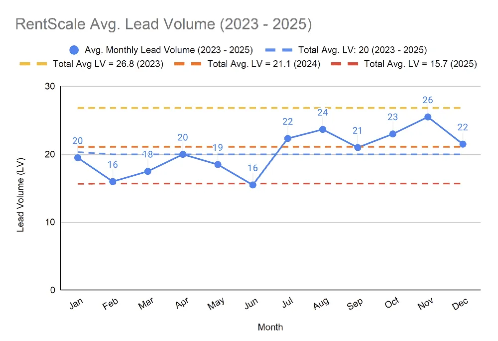
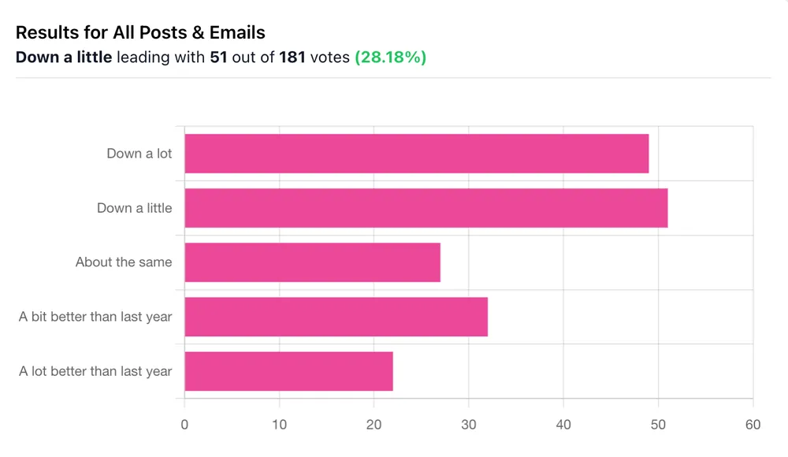

I’ve been hearing it everywhere lately: “Owner leads are down!”
At first, I chalked it up to random (or seasonal) variance - a slow month here, a weird summer there. But then I saw the RentScale data.
RentScale publishes a monthly scoreboard of owner lead activity across property management companies, and when you zoom out across the last few years, the trend is unmistakable: total lead volume is dropping year-over-year. Check it out:

To sanity-check it, I ran a poll in my newsletter. Out of 181 responses, more than half said their leads were down (either a little or a LOT). So yeah… it’s real.

But something still wasn’t adding up.
I wanted to understand what was really going on, so I went digging into our CRM. I thought I was just going to confirm the trend, but what I found completely flipped my assumptions about how owner leads behave.
The Clue That Changed Everything
The real “oh crap” moment came when I ran some numbers on Crane.
We had a big batch of new members join recently, and I was curious what finally pushed them over the edge. So I pulled the data - where they came from, what emails they opened, what CTAs they clicked.
What I found blew me away: Most of them had been subscribers for over 18 months. That means they saw me promote Crane during at least three different application windows before finally applying.
Naturally, this got me wondering about our owner leads at RL Property Management. Were we seeing the same delayed decision-making there?
What Our Lead Data Actually Showed
So I opened up LeadSimple, filtered to show only Closed-Won owner leads for this year (not just new leads, but the ones we actually signed). Then I calculated how long each one took to close, from the day they entered the CRM to the day they became a client.
I expected to see an average of maybe 30 days. Six weeks, tops.
The actual number?
Nineteen weeks. That’s four and a half months.
The median was still a whopping 43 days. And more than 40% of our deals took longer than 60 days to close. Here’s the distribution:
If we had only been working the “fresh” leads (60 days old or newer) we would’ve missed almost half our wins.
We’ve Been Following Up Like It’s Speed Dating
This was a wake-up call.
Most of us treat owner leads like Tinder matches - swipe, pitch, follow up once or twice, and move on. If they don’t bite right away, we assume they’re dead.
But the data tells a different story.
Turns out, a huge chunk of our clients are more like newsletter lurkers. They’re watching, reading, lurking in the shadows… and then, months later, they suddenly reach out like it was their idea all along.
We’ve been building systems to close leads. What we actually need are systems to nurture them - over weeks, months, maybe even years.
Because here’s the truth: owner leads aren’t fireworks. They’re houseplants. If you want them to grow, you have to water them.
Okay, So What Do You Do With This?
So what do we do with this?
Here are a few things I’d recommend based on what we uncovered.
1. Audit your CRM.
This is the first move. Pull all your Closed-Won owner leads from this year, and calculate the average time-to-close. Not from when they first contacted you, but from when the lead was created in your CRM to when they signed. I bet you’ll be surprised. I sure was.
If you’re only working the “new” leads that came in the last 30–60 days, you might be walking away from half your potential revenue.
2. Rebuild your nurture sequences.
Most sales systems in PM are built to chase, not cultivate. You need both. This means:
Consistent email follow-ups (yes, even three months later)
Regular newsletters to stay top-of-mind
Direct check-ins for the slow-burn leads
We use LeadSimple for this, and there’s a lot of potential with automation. But you still have to write good emails and build smart workflows. Otherwise, it’s just noise.
3. Fix your bottlenecks.
Even if you nail the follow-up, it won’t matter if fulfillment is broken. Case in point: we recently discovered our pre-inspection scheduling delay was killing close rates. Our BDM would get a “yes” from an owner, only to find out we couldn’t do the inspection for 10+ days… and just like that, the lead ghosted.
Lead flow is only half the battle. Fulfillment has to be airtight too.
My key takeaway? Owner leads aren’t gone. They’re just… slower. And if you’re not playing the long game, you’re probably leaving money on the table.
Don’t Let Good Leads Die Quietly
This discovery really changed how I think about lead follow-up.
We’re in the process of rebuilding some of our systems (longer nurture sequences, better tracking, more intentional outreach) because clearly, the way we’ve been doing it wasn’t capturing the full picture.
If you’ve done a similar analysis (or if you’re about to run one now), I’d love to hear what you find. Shoot me a note.
Bottom line is: Some of your best leads are probably already in your system. Don’t let them die on the vine.